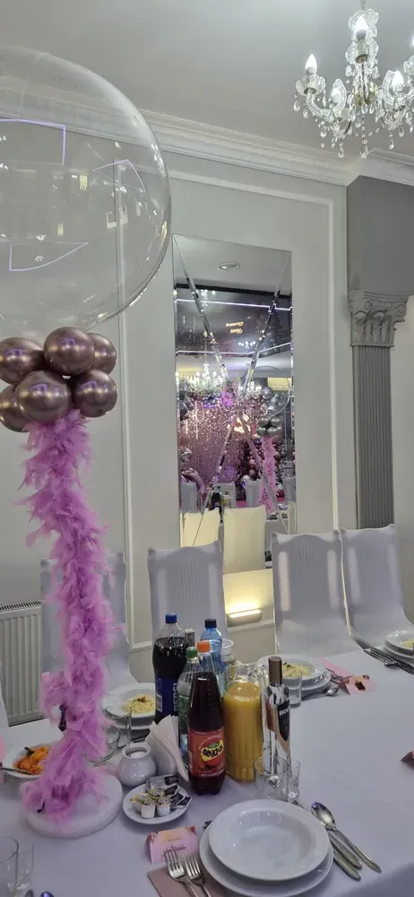

Turek i okolice
Przyjęcia rodzinne i firmowe
Osiemnastki, okrągłe urodziny, komunie, chrzciny, konsolacje, bankiety firmowe. Salę wynajmujemy na wyłączność – w dniu przyjęcia nikt inny z niej nie korzysta.

18. urodziny
Osiemnastka, o której będą mówić
Dwa pokolenia w jednej sali: znajomi jubilata, którzy chcą tańczyć, i rodzina, która czeka na porządny ciepły obiad. Układamy przebieg wieczoru tak, żeby obie strony wyszły zadowolone.
| Sala | na wyłączność, do 150 gości, klimatyzowana |
|---|---|
| Parkiet | profesjonalne nagłośnienie i światła LED, miejsce dla DJ-a lub zespołu |
| Ekran i rzutnik | pokaz zdjęć z dzieciństwa, wideo-życzenia |
| Efekty | ciężki dym na pierwszy taniec, fontanny iskier do wjazdu tortu |
| Słodki stół | tort i ciasta z naszej kuchni lub własny tort |
| Diety | dania wegetariańskie, wegańskie, bezglutenowe – zgłoszenie 7 dni wcześniej |

Motyw imprezy – sala jako tło
Wystrój Finezji jest neutralny i łatwo go „przebrać”. Przynieś zdjęcia z Pinteresta, ulubione kolory i listę zainteresowań – przełożymy to na aranżację.
| Glamour | złote balony, cekinowe tła, świece, elegancka kolacja i taneczna druga część |
| Hollywood | czerwony dywan, ścianka jak na premierze, „gwiazdy” z imionami gości |
| Podróże | flagi odwiedzonych krajów, mapy, stoły nazwane miastami |
| Gaming / film | plakaty ulubionych gier i filmów, neony, muzyka w klimacie |
| Boho | suszone kwiaty, pampasy, drewno, lampiony i ciepłe światło |
Forma podania
Menu układamy z Tobą – proponujemy 2–3 warianty w różnych cenach, bez sztywnych pakietów.
| Forma | Dla kogo | Jak to działa |
|---|---|---|
| Serwowana | osiemnastka z rodziną | dania podawane do stołu przez kelnerów |
| Bufet | impreza taneczna ze znajomymi | goście jedzą, kiedy chcą |
| Mix | najczęstszy wybór | ciepły obiad do stołu, potem kolejne dania i słodki stół na całą noc |
Ile kosztuje osiemnastka w Finezji?
Cena zależy od liczby gości, menu i atrakcji. Przygotowujemy indywidualną wycenę – po kontakcie ofertę dostaniesz w ciągu 24 godzin.
Ile osób pomieści sala?
Komfortowo do 150 gości przy osiemnastce z parkietem. Organizujemy też mniejsze, kameralne przyjęcia.
Czy można przynieść własny tort lub alkohol?
Tak – szczegóły ustalamy przy rezerwacji.
Do której może trwać impreza?
Sala stoi z dala od zabudowań mieszkalnych, więc zabawa może trwać do późnych godzin nocnych – godzinę ustalamy przy rezerwacji.
Roczek, 30, 40, 50, 60, 70 lat
Okrągłe urodziny i jubileusze
Na poważnie i uroczyście albo z przymrużeniem oka – z wystawnym obiadem i tortem albo kolacją z tańcami. Kameralne przyjęcie w gronie najbliższych i większa uroczystość z rozmachem wyglądają u nas inaczej, bo każde ustawiamy od nowa.
Doradzimy w kwestii menu, ustawienia sali i harmonogramu. Przy przyjęciach dla dzieci wydzielimy strefę do zabawy, przy sześćdziesiątce czy siedemdziesiątce – ustawimy stoły tak, żeby dało się swobodnie rozmawiać.
Przy sprzyjającej pogodzie część przyjęcia może odbyć się na zewnątrz.



Komunia święta i chrzciny
Rodzinne przyjęcie w jasnej sali
Pierwsza Komunia i chrzest to dni, w których przy jednym stole siedzą dziadkowie, rodzice i najmłodsi. Przygotowujemy menu dla dorosłych i dla dzieci, układ stołów z miejscem do zabawy i dekoracje dopasowane do uroczystości – od białych kwiatów po podświetlane napisy.
Do kościołów w Turku jest około 10 minut samochodem, a przed salą czeka bezpłatny parking.
Na komunie warto rezerwować salę z dużym wyprzedzeniem – majowe niedziele znikają pierwsze.
Dla firm
Bankiety, wigilie firmowe, szkolenia
Kolacje biznesowe, jubileusze firm, integracje, wigilie pracownicze i szkolenia. Sala z nagłośnieniem, rzutnikiem i klimatyzacją, parking dla wszystkich uczestników, obsługa kelnerska i faktura.
Menu ustalamy pod grupę, z uwzględnieniem diet i alergii. Na Andrzejki możemy przygotować zamknięty bal tylko dla Waszej firmy w innym listopadowym terminie.

Konsolacja
Spokojne miejsce na spotkanie po pogrzebie
Konsolacja to czas, w którym rodzina i bliscy mogą usiąść razem przy posiłku i wspominać zmarłego. Wiemy, że w tych dniach nie ma siły na organizację – ustalimy wszystko w jednej rozmowie telefonicznej: liczbę osób, godzinę, obiad, kawę i ciasto.
Salę przygotujemy tak, żeby było cicho i kameralnie, a obsługa pozostanie dyskretna.
Święta
Wielkanoc i Wigilia bez gotowania
Świąteczny obiad w sali w gronie rodziny albo tradycyjne potrawy na wynos – pierogi z kapustą i grzybami, barszcz czerwony z uszkami, smażony karp, kompot z suszu. Catering wigilijny odbierasz 23 grudnia w godzinach 13:00–16:00.
Świąteczne terminy rozchodzą się szybko – zamówienia warto składać z kilkutygodniowym wyprzedzeniem.

Opinie gości
Co piszą po przyjęciu
Ocena „doskonała” na podstawie 300 opinii w Google.
Pozytywna opinia z osiemnastki mojej córki. Jedzenie było przepyszne, świeże, a panie w obsłudze i kuchni przemiłe. To nie była moja pierwsza impreza na tej sali i nic mnie nie zawiodło.
Robiliśmy u Państwa niejedną imprezę i jak zawsze jesteśmy bardzo zadowoleni. Jedzenie przepyszne, dużo i te wasze devolaje. Z cateringu również jesteśmy zadowoleni – przede wszystkim ciepły.
Organizowałam tu wesele syna, ponieważ urzekł mnie klimat tego miejsca i fantastyczna obsługa. Największym potwierdzeniem doskonałego wyboru były zachwyty gości nad podanymi daniami.
Rezerwacje i wizyty
Najlepiej zobaczyć salę na miejscu
Umów się na wizytę – pokażemy salę, kuchnię, pokoje i parking, a przy okazji opowiemy, jak wyglądają przyjęcia u nas. Spotkania także w weekend.
- Telefon
- 665 188 619 · 601 637 397
- biuro@finezja.org
- Adres
- Kaczki Średnie 10c, 62-700 Turek